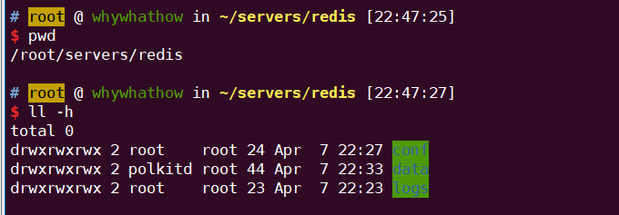

2022.02.16 spring.profile 不生效
在构建项目的过程中,出现 classpath问题, 大致原因:
- 项目问题--> rebuild项目
- maven resources 资源配置问题(导致resources文件夹下的配置文件被排除在外了), 重新修改一下.
在实现多环境配置开发中, 发现由于springboot 版本不同导致application.yml 不能成功应用其他application-dev.yml
- 解决方案: spring.config.use-legacy-processing=true
- 官方链接
2022.03.22 Mybatis 查询结果与mysql查询结果不一致
MySQL查询结果与Mybatis 查询结果不一致:
Reason:
Druid select 查询语句 结果集返回行数限制,
stupid ! ! !
2022.04.05 服务器中毒
G了, 服务器被中木马了,被挖矿了,呜呜呜, 费劲!
show: redis用于存储用户身份令牌, 用户身份令牌频繁失效(未到过期时间),想到可能是rdb文件写入没有权限,就小手一点,放开权限, 带来悲剧,ε(┬┬﹏┬┬)3
- 最初部署在docker 中, 令牌重复刷新 (hint ,这个时候我也已经看到redis 包
Reason:
rdb文件写入系统, 执行 cron定时任务.
- redis 具有root权限, 可读可写
- redis-cli 可以设置 rdb 文件路径
- redis-cli 通过set 命令 获取脚本, rdb保存后,定时任务自动执行.
大部分redis服务都是在root权限下的，所以其实redis是有全局的读写权限的。 而且redis本身在客户端就可以通过
CONFIG GET/SET指令获取或修改配置，在没有密码保护的情况下，这个是很危险的。 通常黑客在发现redis服务可以访问（无密码或弱密码）后，首先会通过这样的手段修改redis的rdb文件路径和名字：xxxxxxxxxxconfig set dir /var/spool/cronconfig set dbfilename root没错，将rdb文件修改为root用户的定时任务文件。 然后写入几个key，并保存。
xxxxxxxxxxset xxoo "\n\n*/1 * * * * somecommand"save这样一个指令somecommand就以rdb的形式保存到了定时任务中。 这个somecommand可以是一个反弹shell的命令（定时一定时间后，让这台肉鸡主动连接到自己机器上，反弹出shell让自己可以操作肉鸡）；而更为普遍的是自动下载一个脚本并自动运行，也就是我所遭遇的这个。
PS: 没想到redis还有这种漏洞, 可以用来挖矿....orz....
- learn:
redis 安全考虑: 容器化, docker部署, 设置密码, 设置密码, 设置密码, 更换端口!更换端口!
solution:
之前有准备镜像盘, 准备重装系统从镜像盘回复.
- 系统命令被修改的一塌糊涂
- 个别指令被设置成 挖矿启动器 So Fun!
ref:
2022.04.07 Redis docker-compose 配置问题
- 情景
log 日志无法写入-> permission denied
Reason:
redis配置文件所在的目录 缺少写权限, 无法将log 写入到日志文件
(实际上没有必要,写入后,无法通过docker logs -f fun-redis 查询日志信息)
解决方案 (1,2 必做)
-
xxxxxxxxxx### yaml 添加 privileged: trueversion'3.0'servicesfun-redisimageredis6.2.6-alpine# build: rediscontainer_namefun-redisports"16379:6379"userrootprivilegedtruecommandredis-server /etc/conf/redis.confvolumes./redis/conf:/etc/conf./redis/data:/data./redis/logs:/logs # 可以去掉,添加后,无法 通过docker logs -f 查询日志信息 为redis 文件目录添加写权限
xxxxxxxxxx# 暴力写法 ,临时使用cd redis # 进入redis 配置文件目录中chmod +777 *
-
Ref:
2022.04.09 如何对mysql 进行批量插入性能优化.
项目在做批量插入的时候, 影响性能的因素 -> 创建的中间对象, 即 List
诚然 mybatis plus 有直接的method 可以直接实现批量查询, 但是 中间 list 对象对内存占用是没有必要性的 .
Mybatis 最后的做法是 insert into tb(name,age) values (a,2),(c,1)....
优化: 去掉中间没用的list对象, 采用字符串凭借
xxxxxxxxxx void test() { List<String> list = new ArrayList<>(); list.add("a"); AtomicReference<StringBuilder> sb = new AtomicReference<>(new StringBuilder()); AtomicInteger count = new AtomicInteger(0); list.forEach(val -> { if (count.get() == 0) { // insert into tb values sb.get().append("insert into tb values"); } sb.get().append("(").append(val).append(")").append(","); //save To DB if (count.get() == 1024) { saveToDb(sb.get().toString()); sb.set(new StringBuilder()); } } ); sb.get().substring(0, sb.get().length() - 1); saveToDb(sb.get().toString()); }2022.04.15 skywalking service 默认配置
xxxxxxxxxx//-javaagent:agent/skywalking-agent.jar//-Dskywalking.agent.service_name=fun-gateway//-Dskywalking.collector.back2022.05.23 /oauth/token 映射不到 , 403 问题 结果调到/error页面
示图

思路:
xxxxxxxxxx1. /oauth/token 映射不到, 所以说明 是filter 阶段出错, 选择filter debug 处理 ( 可以是可以,不过速度过慢, 且没有对比,无法判断问题)1.
xxxxxxxxxxSecurity filter chain: [ WebAsyncManagerIntegrationFilter -> async SecurityContextPersistenceFilter -> HeaderWriterFilter -> LogoutFilter -> logout ClientCredentialsTokenEndpointFilter -> ClientCredentialsTokenEndpoint BasicAuthenticationFilter -> httpbasic 认证 request header中的 basic 信息 RequestCacheAwareFilter SecurityContextHolderAwareRequestFilter AnonymousAuthenticationFilter SessionManagementFilter ExceptionTranslationFilter FilterSecurityInterceptor]
pig /oauth/token/
xxxxxxxxxxSecurity filter chain: [ WebAsyncManagerIntegrationFilter -> SecurityContextPersistenceFilter -> HeaderWriterFilter -> LogoutFilter -> ClientCredentialsTokenEndpointFilter-> BasicAuthenticationFilter -> RequestCacheAwareFilter SecurityContextHolderAwareRequestFilter AnonymousAuthenticationFilter SessionManagementFilter ExceptionTranslationFilter FilterSecurityInterceptor]reason:
1.SecurityConfiguration 类中 AuthenticationManager 配置 出错, 若配置 super.authenticationManager() -> StackOverflow error , 需要配成 super.authenticationManagerBean();
ClientDetailsService, 以及UserDetailsService可能存在错误,-> 降级, 从 db-> memory 配置- 对spring security 以及 spring-oauth 执行顺序 不够了解 ==> filter->controller("/oauth/token)"
- 对授权服务配置而言, 自定义 tokenServices,tokenStore, tokenEnhancer...是否已经进行正确的配置, 若没有的话, 可能会报 stackoverflow error
xxxxxxxxxx protected AuthenticationManager authenticationManager() {// ISSUE [whywhathow] [24/5/2022] [must] 这个会导致 stackoverflow error // return super.authenticationManager(); return super.authenticationManagerBean(); }debug 观测点:
DispatchServlet.doDispatch()AbstractUserDetailsAuthenticationProvider.authenticate()BasicAuthenticationFiltertokenEndpoint/oauth/token 模块.
2022.05.25 SpringCloud OpenFeign 使用
使用手册:
consumer 端 maven 配置 -> spring-cloud-feign , spring-cloud-loadbalancer
xxxxxxxxxx<!-- 引入open feign--><dependency><groupId>org.springframework.cloud</groupId><artifactId>spring-cloud-starter-feign</artifactId></dependency><!-- 必须同步引入loadbalancer --><dependency><groupId>org.springframework.cloud</groupId><artifactId>spring-cloud-loadbalancer</artifactId></dependency>consumer端 应用@EnableFeignClients(value="Feign.package") ==>fun-auth
api端 提供 @FeignClient(value=service.name) 接口
provider 端 <==> fun-service-system
注意:
remoteXXXClient 方法返回值具体类需要给定.
eg:

- 错误案例
xxxxxxxxxx ("/user/details/{username}")// @Operation(summary = "通过用户名获取用户所有信息", description = "通过用户名获取用户所有信息") R getUserDetailsByUsername(("username") String username);// 实际返回值是 msg, code, T-> T如果不指定的话, Feign 默认应该是linkedhashmap , 然后后续业务代码中 如果出现强制类型转化, 铁定报错
修改方案 --> 指定T类型
xxxxxxxxxx("/user/details/{username}")R<UserInfo> getUserDetailsByUsername(("username") String username);
ref:
- 官方文档spring-cloud-openFeign
- feign 源码解析 -> link
- ribbon源码解析
2022.05.26 无法使用userdetailsService 验证用户名密码
reason:
未注入 DaoAuthenticationProvider, --> 意味着 SecurityConfiguration 中 authenticationManager 配置出错, 没有成功配置.
如何判断?
简单思路: 判断 ProviderManager.authenticate() -> getProviders() 添加断点, 依次判断即可.

解决方案:
SecuirtyConfiguration
xxxxxxxxxx private final UserDetailsService userDetailsService;
public SecurityConfiguration(UserDetailsService userDetailsService) { this.userDetailsService = userDetailsService; }
/** * 注入 dao userDetailsService 认证方案. * * @param builder the {@link AuthenticationManagerBuilder} to use * @throws Exception */ protected void configure(AuthenticationManagerBuilder builder) { builder.userDetailsService(userDetailsService)// .passwordEncoder() ; }
/** * 通过父类 注册 AuthenticationManager * * @return */ public AuthenticationManager authenticationManagerBean() {// ISSUE [whywhathow] [24/5/2022] [must] 这个会导致 stackoverflow error // return super.authenticationManager(); return super.authenticationManagerBean(); }
2022.05.26 Bad credentials

reason:
1. mysql 端密码进行了加密, 然而,前端传过来的数据并没有进行加密处理,sry.
* 准确来说, 是在fun-auth认证模块中,没有配置密码加密工具. BcryptPasswordEncoder.
扩展点:
- 前端密码 明文传输? {username:admin , password:123456} 传输, 还是Encode({username,password}) 加密传输呢 ?
若选择加密传输, 那么,在后端项目中, 需要在网关处进行解密处理,使密码回归原文 在认证模块中通过配置PasswordEncoder 即可.
- Mysql 数据库中,用户密码 存在 用 明文保存的密码,以及用BcryptPasswordEncoder 保存的密码, 要如何处理 呢,要如何保证前后密码保持一致呢?
思路一: 删除旧有 的明文保存的用户信息 --> 测试账户无法使用,需要重新进行测试.
思路二:增量更新(在明文密码用户密码校验成功后,将密码进行加密,重新写回mysql) : 自定义PasswordEncoder, 用户传来的密码是明文, 判断是否与mysql密码匹配, 匹配的话,更新密码信息,重新写会mysql.
思路三: 允许明文密码用户登录,但是提醒用户密码过弱,需要修改密码在登陆.(很常见的一种方案)
示图:

ref:
x1. <Spring Security 实战> 陈木鑫 7.3 Spring Security的密码加密机制
2022.05.26 NPE